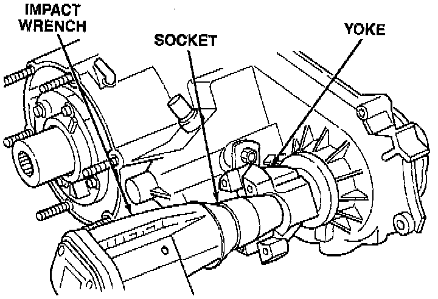
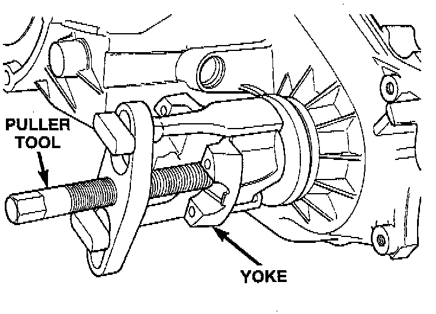
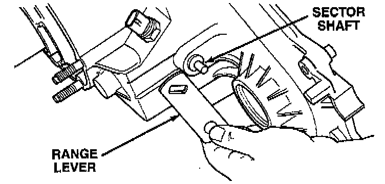

Yoke and Range Lever Removal
1. Remove front yoke nut:a. Move range lever to 4L position.

b. Remove nut with socket and impact wrench.

2. Remove yoke. If yoke is difficult to remove by hand, remove it with bearing splitter, or with standard two jaw puller. Be sure puller tool is positioned on yoke and not on slinger as slinger will be damaged.
3. Remove seal washer from front output shaft. Discard washer as it should not be reused.

4. Remove nut and washer that attach range lever to sector shaft. Then move sector to neutral position and remove range lever from shaft.